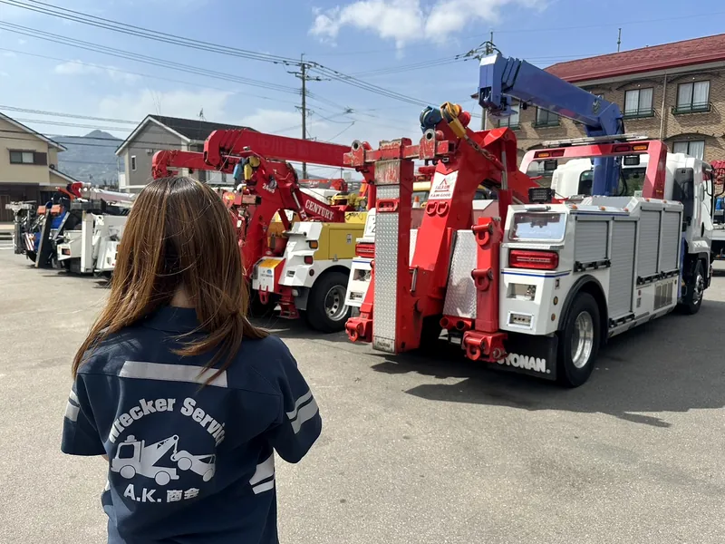
夜中も休日も、駆けつけます
最短10分で到着
※実績の一例です。場所・道路状況・時間帯により異なります
早朝や土日祝も、休まず受け付けています。
夜間（20:00〜翌9:00）は、お電話でご連絡ください。
レッカー車は、福岡市早良区重留と糸島営業所の2か所から、福岡県全域に出動します。
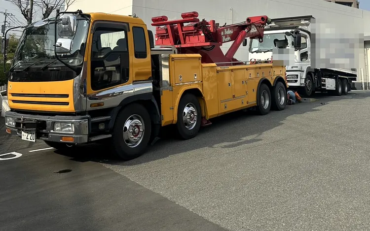
レッカー・ロードサービス｜株式会社A.K.商会
福岡県全域に出動｜早良区・糸島に拠点
LINEなら、写真を送るだけで相談できます。
うまく説明できなくても大丈夫です。
LINEは9:00〜20:00。夜間はお電話で
電話：0120-925-985
最短10分で到着
※実績の一例です。場所・道路状況・時間帯により異なります
「ロードサービス テュフ認証」取得
TROUBLE
車が動かない。どうしていいか分からない。
そんなときも、慌てなくて大丈夫です。
事故にあった車を引き上げて、運びます
動かなくなった車を運びます
その場で対応します
現場に伺って対応します
車のドアを開けます
車を引き上げて戻します
軽自動車・普通車・大型車・バイク・外車（輸入車）に対応
車高の低い車も運べます。特殊車両はご相談ください
ここにないトラブルも、ご相談ください。
LINEなら写真を送るだけ（9:00〜20:00）。夜間はお電話で。
REASON

最短10分で到着
※実績の一例です。場所・道路状況・時間帯により異なります
早朝や土日祝も、休まず受け付けています。
夜間（20:00〜翌9:00）は、お電話でご連絡ください。
レッカー車は、福岡市早良区重留と糸島営業所の2か所から、福岡県全域に出動します。
焦っていると、電話で状況を説明するのは大変です。
LINEなら、車の写真と位置情報を送るだけ。
写真を見て状況をつかみ、料金と到着の目安をご案内します。
見積もりは無料です。
LINE受付は 9:00〜20:00。夜間はお電話でどうぞ。
外部の機関の審査を受け、「ロードサービス テュフ認証」を取得しています。
各損害保険会社のロードサービスも担当しています。
軽自動車から大型車まで、状況に合ったレッカー車で伺います。
「ロードサービス テュフ認証」取得
認証機関：テュフ ラインランド ジャパン
各損害保険会社のロードサービスも担当
一般社団法人日本自動車連盟（JAF）とロードサービスの委託契約
現場や車の大きさに合わせて、車両を使い分けています。
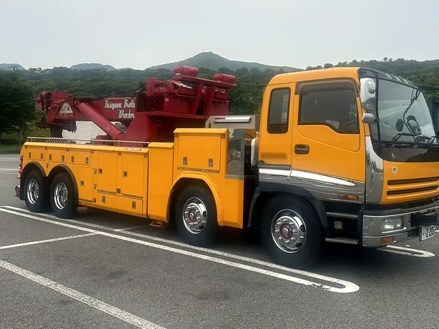
大型レッカー車
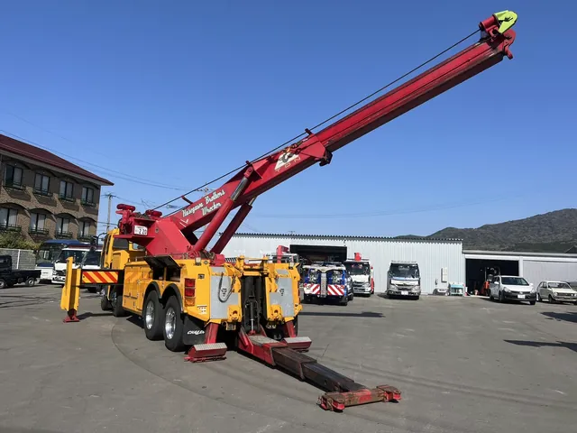
大型レッカー車（クレーンを伸ばした状態）
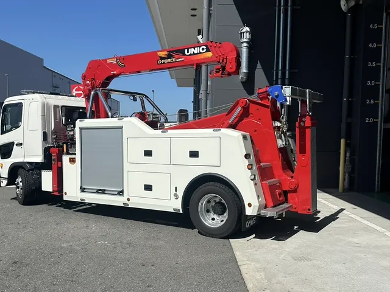
中型レッカー車
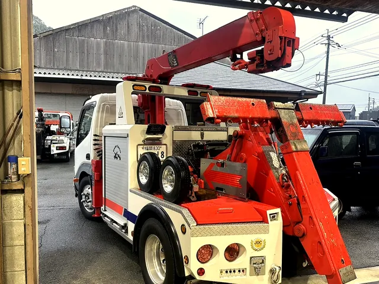
小型レッカー車
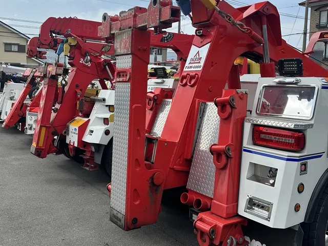
横にスワイプしてご覧ください →横にスクロールしてご覧ください
荷台が平らな積載車（フルフラット）もあり、車高の低いスポーツカーなども運べます。
夜間（20:00〜翌9:00）やお急ぎのときは、お電話で
SERVICE
現場の状況を見て、必要な作業を行います。
故障や事故で動かなくなった車を運びます
バッテリーが上がってエンジンがかからないとき、その場で対応します
タイヤのパンクに対応します
鍵を車の中に閉じ込めたとき（インロック）、ドアを開けます
溝や段差に落ちたタイヤを戻します。ぬかるみにはまった車も引き上げます（状況によっては難しい場合があります）
事故で動けなくなった車を引き上げ、運びます
ここにないトラブルも、ご相談ください
荷台が平らな積載車（フルフラット）で、車高の低い車も運べます。
特殊車両はご相談ください
PRICE
料金は、距離・車種・作業内容・時間帯によって変わるため、このページには載せていません。
金額は、LINEかお電話でお気軽にお問い合わせください。
見積もりは無料です。
到着料も作業の料金も、事前にご説明します。
到着料は、現場に到着した時点でかかる料金（出張の費用）です。
金額は、出動する前にお伝えします。
作業の料金は、作業を始める前にご説明します。
距離
現場までの距離、運ぶ距離
車種
軽自動車・普通車・大型車・バイクなど
作業内容
レッカー移動、パンク、鍵開けなど
時間帯
昼・夜など
夜間（20:00〜翌9:00）やお急ぎのときは、お電話で
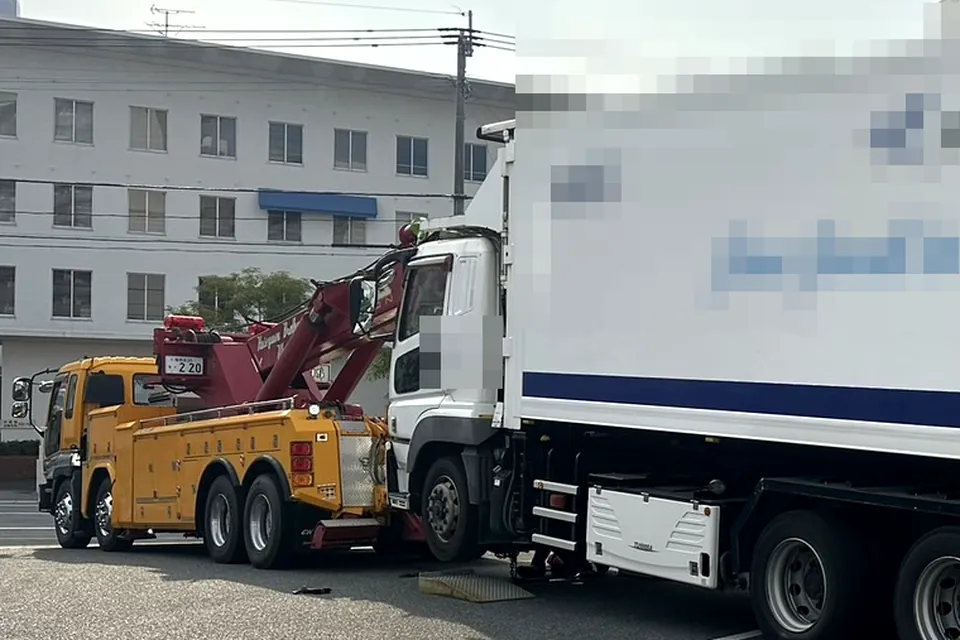
FOR BUSINESS
整備工場・中古車販売店・ディーラーさまの車両移動も承ります。
故障車・動かない車の引き取りや、お店どうしの移動などをご相談ください。
大型車・バイク・外車にも対応しています。特殊車両はご相談ください。
事業用ナンバー（緑ナンバー）を取得しているので、長距離の車両の運送もご相談いただけます。
LINEなら、車の写真と場所を送るだけでご依頼いただけます（LINE受付 9:00〜20:00）。
お支払い方法や、継続的なご依頼についても、お気軽にお問い合わせください。
夜間（20:00〜翌9:00）やお急ぎのときは、お電話で
AREA
拠点は、福岡市早良区重留と糸島営業所の2か所です。
福岡県内なら、どこからでもご連絡ください。
福岡市内は、平均30分以内で到着しています。
※場所・道路状況・時間帯により異なります
LINEで位置情報を送っていただくと、場所がすぐに伝わります（LINE受付 9:00〜20:00）。
夜間はお電話でどうぞ。
FLOW
LINEで状況を送れば、そこから相談がはじまります。
到着料は出動の前に、作業の料金は作業の前にお伝えします。
STEP 01
次の4つを送ってください。分かる分だけで大丈夫です。
LINE受付は 9:00〜20:00 です。
20:00〜翌9:00 は、お電話で同じ内容をお伝えください。
【場所】 【車種】 【状況】 （このあと写真を送ります）
STEP 02
送っていただいた内容を見て、料金と到着の目安をお知らせします。見積もりは無料です。
現場に着いた時点でかかる到着料も、出動する前に金額をお伝えします。
STEP 03
レッカー車で現場に伺い、作業の料金をご説明してから作業を始めます。
到着まで、安全な場所でお待ちください。
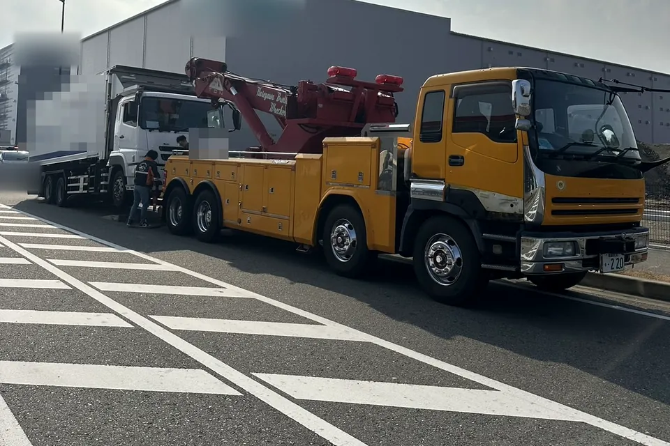
お電話でも、同じ流れで受け付けています（24時間）。
写真が撮れない状況なら、無理せずお電話ください。
LINEがおすすめ（9:00〜20:00）
お電話がおすすめ（24時間）
HOW TO SHOOT
① 車の全体
少し離れて、斜め前から車全体が入るように
分かること：車の種類・大きさ・向き
② 困っているところ
パンクしたタイヤ、落ちた車輪、壊れた部分などに近づいて
分かること：必要な作業や道具
③ まわりの様子
車の前後の道や、駐車場の出入口が分かるように
分かること：レッカー車が入れるか、作業できる広さがあるか
3枚そろわなくても大丈夫。撮れる分だけ送ってください。
道路の上や危ない場所では、撮影より安全を優先してください。車から離れ、安全な場所に移ってからご連絡ください。
暗くて撮れないときは、写真なしで状況を送るか、お電話ください。
FAQ
到着料も作業の料金も、事前にご説明します。到着料は出動する前に、作業の料金は作業を始める前にお伝えします。見積もりは無料です。LINEで写真を送っていただくと、状況が伝わりやすくなります。
現場に到着した時点でかかる料金（出張の費用）です。金額は状況によって異なりますが、出動する前にお伝えします。
キャンセル時の料金は、ご依頼の際にお気軽にお尋ねください。
お支払い方法は、ご依頼の際にお気軽にお尋ねください。
はい。深夜や早朝も、24時間・年中無休で対応しています。即日対応もしています。夜間（20:00〜翌9:00）は、お電話でご連絡ください。
当社は、各損害保険会社のロードサービスも担当しています。保険が使えるかどうかは、ご加入の保険の内容（約款）によって決まります。約款で対象になっている作業であれば、保険を使える場合があります。保険を使うときは、お客様からご加入の保険会社へ「A.K.商会に手配している」とお伝えください。くわしくは、ご加入の保険会社にお問い合わせください。
LINEの受付は 9:00〜20:00 です。20:00〜翌9:00 は、お電話でご連絡ください（電話は24時間受け付けています）。お急ぎのときは、時間にかかわらずお電話がおすすめです。
お電話で受け付けます（24時間）。場所・車種・状況をお伝えください。
はい、対応しています。車高の低いスポーツカーなども、荷台が平らな積載車（フルフラット）で運べます。特殊車両はご相談ください。
運ぶ先は、ご依頼の際にご相談ください。事業用ナンバー（緑ナンバー）を取得しているので、長距離の運送もご相談いただけます。車の一時的なお預かりも、基本的にお受けしています（状況によっては有料になる場合があります）。
まず、安全な場所に移ってください。けがをした人がいるときは、まず119番へ。けがをした人がいなくても、事故のときは110番（警察）に連絡してください。そのうえで、車の移動が必要なら当社にご連絡ください。
ほかにも分からないことは、LINEで気軽にどうぞ（LINE受付 9:00〜20:00）。
夜間（20:00〜翌9:00）やお急ぎのときは、お電話で
COMPANY
A.K.商会は、平成22年に設立しました。
福岡市早良区と糸島市を拠点に、福岡県全域でレッカー・ロードサービスを行っています。
Instagramでも、A.K.商会の様子をご覧いただけます。
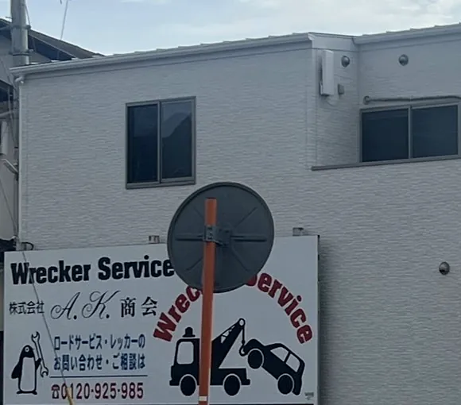
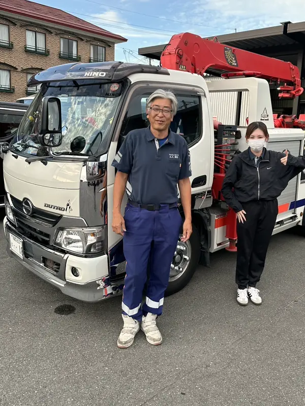
STAFF
事故や故障のときは、だれでも不安になるものです。
現場では私たちがしっかり対応しますので、どうぞ安心してお任せください。
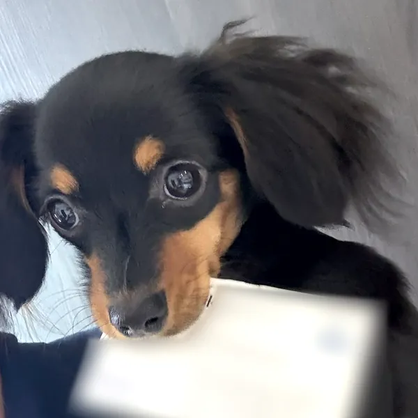
車のトラブルは、だれでも不安になるもの。
小さなことでも、気軽にご相談ください。
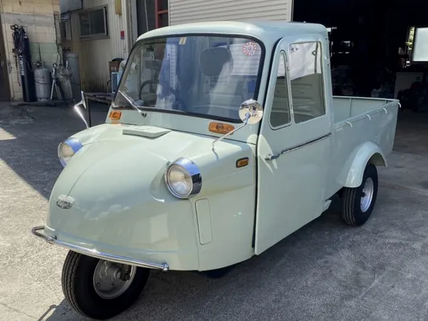
夜間（20:00〜翌9:00）やお急ぎのときは、お電話で
CONTACT
24時間・年中無休
福岡県全域に出動（早良区・糸島に拠点）
LINEなら、写真を送るだけで相談できます（9:00〜20:00）。
お急ぎのとき、危ない場所にいるとき、夜間（20:00〜翌9:00）は、お電話ください。